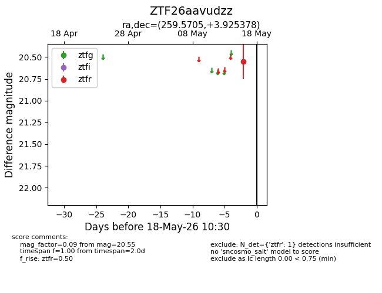
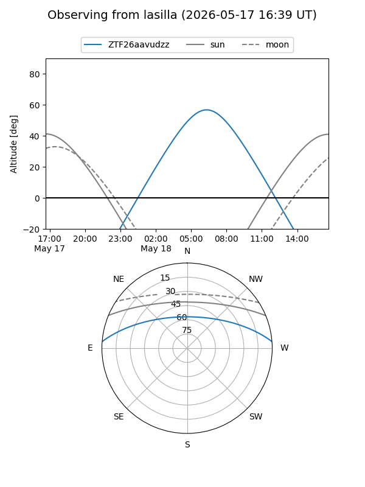
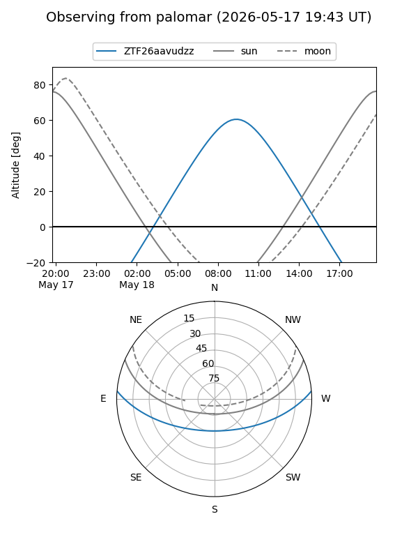

ZTF26aavudzz
Target ZTF26aavudzz at 2026-05-18 10:31
Aliases and brokers:
FINK: link
Lasair: link
ALeRCE: link
alt names
ZTF26aavudzz (ztf,fink_ztf)
Coordinates:
equatorial (ra, dec) = 259.5705,+3.92538
equatorial (HMS+DMS) = 17:18:16.93,+03:55:31.36
galactic (l, b) = (25.5370,+22.47392)
Flags:
Photometry:
last ztfr=20.55
1 ztfr detections
Lightcurve

Visibility


Additional plots